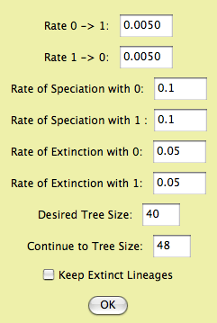

Diversification: Speciation and extinction
The diversification processes that determine the branching pattern
of the phylogenetic tree, speciation and extinction, can be simulated
and analyzed. There is a series of example
files available showing some of these features.
Simulations
Trees can be created through simulations of speciation and extinction.
Here are options:
- Tree simulators available to make tree blocks (Taxa&Trees>Make
New Trees Block from>Simulated Trees) or to generate
trees on demand (e.g., for charts or in the tree window).
- Uniform speciation (Yule) (trees package)
- Generates tree by a pure birth process (a Yule process).
The chance of speciation is equal for all tips. Options:
total time depth of tree.
- Uniform speciation with sampling (TreeFarm
package) — Generates a tree by Yule process, as above,
but with to a total number of species greater than in the
taxa block. Extra species are then randomly sampled out,
to leave the tree with the appropriate number of species.
Barraclough & Nee (2001) discuss how this sampling alters
the branch length distribution of the tree.
- Birth/Death process trees (Diverse package)
— Generates trees with a speciation rate and extinction
rate.
- Trees & Diversification Characters (Diverse
package) — Simulates speciation and extinction, simultaneous
with the evolution of characters that influence speciation and
extinction rates. Select the Trees & Diversification Characters
item in the Taxa&Trees menu to generate the tree block and
a character matrix; the i'th tree was evolved in connection
with the i'th character in the matrix.
- BiSSE Trees & Characters —
by this model, a categorical character evolves with two
states, which can cause their lineages to differ in their
speciation rates, and in their extinction rates. You will
be given the following options for setting up the simulation:

The rates of character change, speciation and extinction
represent the 6 parameters of the BiSSE model. The Desired
Tree Size is the number of terminal taxa in the
trees you want to produce. By default this is the current
number of taxa in the data file, but you could choose a
number either higher or lower. The "Continue
to Tree Size" option is explained as follows.
The algorithm starts speciation and extinction and eventually
the desired tree size is reached. However, it doesn't stop
there, because if the simulation were continued, that desired
tree size might be achieved several times (fluctating as
speciation and extinction push the number of species up
and down). The simulation continues until the size indicated
in "Continue to Tree Size", which should be larger
than the desired size. The simulation goes to that tree
size and then looks back at all of the intermediate steps
in which a tree of the desired number of taxa was achieve.
It then selects one of these trees randomly. (NOTE: the
simulation used in this module differs from that used by
Maddison, Midford and Otto, 2007, who used a prerelease
version of the module. Their simulation proceeded in small
time slices, and stopped as soon as the desired tree size
was reached. The released version samples exponential wait
times to jump to the next event, and proceeds beyond the
desired tree size as described above.)
- Evolving Speciation Rate (continuous character)
— This is a speciation-only model. A continuous character
evolves by Brownian motion; this character is the speciation
rate. There is no extinction.
Lineages through Time
You can display a lineages through time plot of the current tree
in the tree window by selecting the (Tree Window)Analysis>Lineages
through Time menu item.
Analysis: Speciation/Extinction
rates (Independent of character)
This analysis assumes that speciation and extinction rates are
constant (they do not depend on any character). The calculation
is available in the Analysis menu of a tree window, under Diversification
(Char. Indep.). The calculation is also available anywhere
that a value for a tree can be calculated, for instance in the
Tree Legend of the tree window (under Analysis), in the List of
Trees (Columns>Number For Tree>Other Choices), and in a
Trees chart.
- Speciation/Extinction Likelihood - This calculates
the likelihood of a simple birth/death model with a speciation
rate and an extinction rate, using a reduced form of the BiSSE
calculations of Maddison, Midford & Otto 2007. If the rates
are not indicated (i.e. are indicated as ?), then they are estimated.
Analysis: A binary character's effect
on diversification
These analyses explore whether there is an association between
the states of a characters, and the rates of speciation and extinction.
These analyseis are available in the Analysis menu of a tree window,
under Character-Associated Diversification. They
are also anywhere that a value for a tree can be calculated, for
instance in the tree legend of the tree window (Analysis>Tree
Legend>Tree Value Using Character, Show secondary choices),
in the List of Trees (Columns>Number for Tree>Tree Value
Using Character, Show secondary choices), and in charts of trees.
They are also available in the List of Characters window (Columns>Number
For Character>Character Value with Current Tree, Show secondary
choices) and in charts of characters.
- BiSSE Speciation/Extinction Likelihood (Maddison,
Midford & Otto, 2007) — This calculates likelihoods
and estimates parameters of a 6 parameter model of speciation,
extinction and character change. The parameters are speciation
rate under state 0 (lambda0), speceation rate under state 1
(lambda1), extinction rate under state 0 (mu0), extinction rate
under state 1 (mu1), rate of 0 to 1 character change (q01),
and rate of 1 to 0 character change (q10). In the parameters
dialog box you can set the parameter values (or leave them "?",
to be estimated), and you can constrain some to be equal to
others.
- BiSSE Net Diversification Likelihood —
This is basically the same calculation as the BiSSE speciation/extinction
likelihood, but is reparameterized as net diversification rate
under state 0 (r0, which is lambda0-mu0), under state 1 (r1),
speciation/extinction ratio under state 0 (a0, which is lambda0/mu0),
under state 1 (a1), and the two character state change rates.
It is reparameterized to permit you to set constraints of equality
that would otherwise be unavailable.
- Sister Diversification — This uses
the simple sign test on independent sister clade pairs in the
style of Mitter, Farrell and Wiegmann 1988. The analysis automatically
finds sister clade pairs that contrast in the character state
of the binary character. Each clade must be completely uniform
in state. The number of pairs favoring state 1 (i.e. the clade
with state 1 is larger) and favoring state 0 are counted and
used as the basis for the sign test.
The BiSSE likelihood calculations
The Diverse package's BiSSE calculations are based on the equations
of Maddison, Midford & Otto (2007). The maximum likelihood
calculations are performed using the optimizer of Brent (1973).
To improve the performance of the optimizer, the BiSSE module
invokes the optimizer from 10 randomly selected starting points.
During these runs, the numerical integrator (see below) is set
to run with a relatively large starting step size equal to 1/100
the length of an average branch. This length is value is allowed
to vary somewhat (a range of 8:1) with the length of the particular
branch, so that extremely short branches and long branches are
not undercounted or overcounted respectively. The final likelihood
value is then calculated using the starting point with the best
likelihood, but a smaller step size (1/1000) the average branch
length.
The BiSSE method requires numerical solution of a system of
four differential equations along each branch of the tree. To
do this, Diverse uses a RKF45 (Runge-Kutta-Fehlenberg fourth order
method with fifth order step-size control) algorithm to integrate
along the branches. The step-size control allows the step size
to vary from the starting value based on the correction calculation.
Because BiSSE equations are relatively well behaved, using a higher
order correction mostly serves to speed the calculation by allowing
the method to grow the step size. Note that this method is a refinement
of the RK4 algorithm used in Maddison, Midford & Otto (2007).
Hypothesis Testing
To test hypotheses about the association between a character
and diversification rates, you can use either the Sister Diversification
calculation, which directly gives a P value, or the BiSSE Ln Likelihood
Difference calculation, which can be used to get a p value. The
former is an old but fairly non-parametric calculation; the latter
is parametric but uses more of the information in the tree.
The BiSSE Ln Likelihood Difference calculation is used for likelihood
ratio tests. It performing the calculations in constrained and
unconstrained ways and calculating the difference in likelihood.
You can access these calculations as a choice when you do the
Character-Associated Diversification analysis in the Analysis
menu of the Tree window, or in other places (such as charts) where
you are calculating a value for a tree and character. You will
be asked first to specify the parameters of the unconstrained
model, then the parameters of the constrained model.
The likelihood difference can be used to answer whether, for
instance, two parameter values are the same. Thus, the constrained
model would set them equal (using the "Constrain ="
choices in the dialog), while the unconstrained model would not
include this constraint. When there is a difference of a single
degree of freedom in the constrained and unconstrained models
(i.e. comparing a five parameter and a 6 parameter model) then
two times the likelihood difference appears to be approximately
distributed as a chi square (Maddison, Midford & Otto 2007),
so that you can use that distribution for significance values.
It is more accurate, but more time consuming, to simulate under
the null model to derive your own distribution for statistical
testing. You can do this as follows.
- With your data, estimate the values of the BiSSE parameters
in the constrained case (e.g., lambda0 = lambda1).
- Simulate trees and characters using Trees & Diversification
Characters in the Taxa&Trees menu, choosing the BiSSE Trees
& Characters as the simulator. Enter the parameters as you
had estimated them from your data. Choose as many taxa as in
your data. You might want to simulate a small number of trees,
e.g. 5, at first, just to practice with these calculations.
(Later increase the sample size to a large number, e.g. 1000,
to derive a good distribution.)
- Save the file (just in case).
- Choose New Bar & Line Chart for... Characters. You will
be asked a series of question. Here are the responses:
- If asked, choose Stored Characters for Source of Characters. If given a choice,
make sure you choose the matrix you just simulated with
BiSSE Trees & Characters.
- Value (under secondary choices): Character value with
Respective Tree
- Source of trees: Stored trees. If given a choice, make
sure you choose the trees you just simulated with BiSSE
Tree & Characters.
- Value: BiSSE Ln likelihood difference
- BiSSE Parameters: Leave the parameters unspecified, but
set the constraints to be as in your UNCONSTRAINED
model.
- BiSSE Parameters: Leave the parameters unspecified, but
set the constraints to be as in your CONSTRAINED
model.
- This calculation may take a long time. If asked, indicate
you want to save a table of results. Also, print the chart and
save it as text once it's done. You might not want to redo it
(as it takes a while).
Multiple Trees
You can examine likelihoods, or other single parameters from
the BiSSE modules, over multiple trees by asking for a tree chart
and indicating you want a Tree Value using Character. You will
be asked if you want to save the results as a table to a text
file during the calculations; this text file will contain all
of the parameter values as well, as a tab-delimited table, so
that you can import it into a spreadsheet program.
You can also examine multiple trees by setting up the tree window
and selecting Character-Associated Diversification in the Analysis
menu to begin a BiSSE calculation. Then, you can paste the following
script into the Send Script dialog box (available in the Tree
window's Window menu, Scripting submenu). This script will go
from tree to tree, saving results as it goes.
String.resultsFile 'results.txt';
saveMessageToFile *String.resultsFile 'RESULTS with different trees';
appendReturnToFile *String.resultsFile;
getWindow;
tell It;
getNumTrees;
Integer.numReps *It;
ifNotCombinable *Integer.numReps;
Integer.numReps 10; [in case indefinite number of trees]
endIf;
endTell;
debug;
Integer.count 0;
for *Integer.numReps;
increment.count;
getWindow;
tell It;
setTreeNumber *Integer.count;
endTell;
getEmployee #mesquite.diverse.CharAssocDivViewer.CharAssocDivViewer;
tell It;
doCounts; [because counts dont auto-update when scripting]
endTell;
getEmployee #mesquite.diverse.BiSSELikelihood.BiSSELikelihood;
tell It;
getLastResult;
String.result *It;
appendMessageToFile *String.resultsFile *String.result;
appendReturnToFile *String.resultsFile;
endTell;
endFor;
References
Brent, R. P. 1973. Algorithms for Optimization without Derivatives.
Englewood Cliffs, New Jersey. Prentice Hall.
Maddison, W.P., P.E. Midford & S.P. Otto. 2007. Estimating
a binary character's effect on speciation and extinction. Systematic
Biology 56:701-710.
Mitter, C. , B. Farrell, and B. Wiegmann. 1988. The phylogenetic
study of adaptive zones: has phytophagy promoted insect diversification?
American Naturalist 132:107–128.